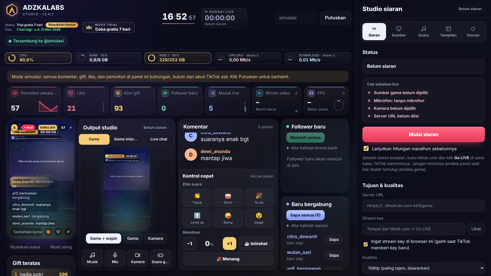

Pantau live secara real-time
Jumlah penonton, like, koin gift, follower baru, dan siapa yang baru masuk, diperbarui langsung dari akun yang sedang live.
Pantau komentar, gift, dan penonton yang masuk, lalu siarkan game Anda langsung dari aplikasi yang sama. Tanpa pindah-pindah program.
Untuk Windows 64-bit · ±78 MB · trial mulai otomatis saat aplikasi pertama dibuka

Dibuat untuk streamer yang live sambil main game dan ingin semuanya terkendali dari satu layar.
Jumlah penonton, like, koin gift, follower baru, dan siapa yang baru masuk, diperbarui langsung dari akun yang sedang live.
Komentar, gift, like, dan follow tampil berurutan, dengan peringkat gifter teratas dan efek suara cepat untuk menyapa penonton.
Tampilkan layar game, kamera, dan mikrofon. Pilih tata letak Game + wajah, Game saja, atau Kamera saja, dan ganti kapan saja saat live.
Cerminkan layar iPhone lewat AirPlay bawaan, atau pakai kabel (capture card atau scrcpy untuk Android). Gambar dan suara masuk ke studio.
Putar playlist dari file PC atau tab browser, tampilkan judul, progres order, dan timer marathon yang tetap berjalan walau koneksi sempat putus.
Donasi masuk muncul sebagai kartu di layar siaran lengkap dengan pesan dan bunyi. Webhook-nya disiapkan otomatis oleh aplikasi.
CPU, RAM, penyimpanan, serta kecepatan upload dan download dengan meter, agar tahu kalau PC atau internet mulai tersendat.
Panel dibuka dari komputer Anda dan tidak bisa diakses dari luar. Stream key tidak dicatat di log dan tidak dikirim ke mana pun selain TikTok.
Tidak perlu instal rumit dan tidak perlu mendaftar akun.
Unduh file ZIP, lalu ekstrak semua isinya ke satu folder. Jangan dijalankan dari dalam ZIP.
Klik dua kali ADZKALABS STUDIO.exe. Panel terbuka sendiri dan trial 7 hari langsung berjalan. Jendela hitam yang ikut muncul jangan ditutup selama live.
Ketik username TikTok untuk memantau, atau buka tombol Siaran, tempel Server URL dan Stream key dari tiktok.com, lalu mulai.
Trial memakai semua tampilan dan alat yang sama. Tidak perlu kartu atau pendaftaran.
Gratis · 7 hari
Per periode, lewat admin
Yang paling sering ditanyakan sebelum mencoba.
Peringatan itu muncul karena aplikasi belum memiliki tanda tangan digital berbayar, bukan karena ada yang salah. Klik More info lalu Run anyway. Bila Windows Firewall bertanya, izinkan untuk jaringan Pribadi.
Windows 64-bit dengan Chrome atau Edge terpasang. Untuk siaran sambil main game berat, pilih encoder kartu grafis di pengaturan agar CPU tidak terbebani.
Aplikasi meminta key lisensi. Hubungi admin untuk sewa, lalu masukkan key di halaman aktivasi. Pengaturan Anda tetap tersimpan.
Stream key hanya dipakai untuk mengirim siaran ke TikTok dan tidak ditulis ke log. Key hanya tersimpan di browser PC Anda jika Anda mencentang "Ingat stream key". Tetap perlakukan key seperti password.
Aplikasi berjalan di PC Windows. HP dipakai sebagai sumber game lewat AirPlay (iPhone) atau kabel, bukan sebagai tempat menjalankan aplikasi.